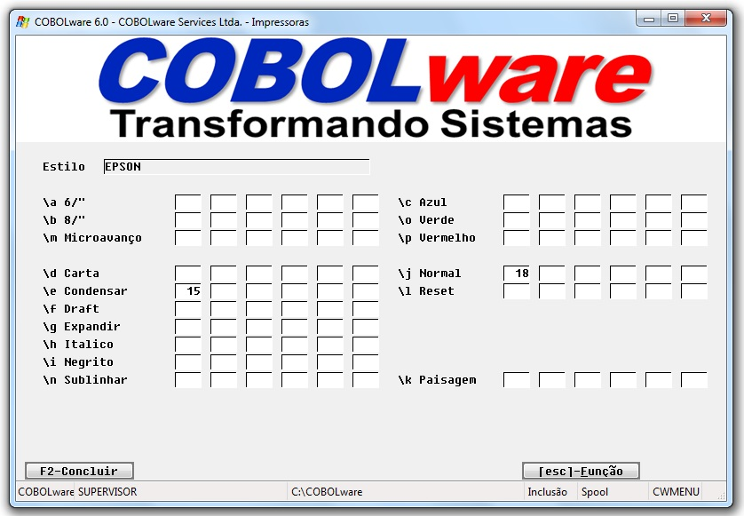
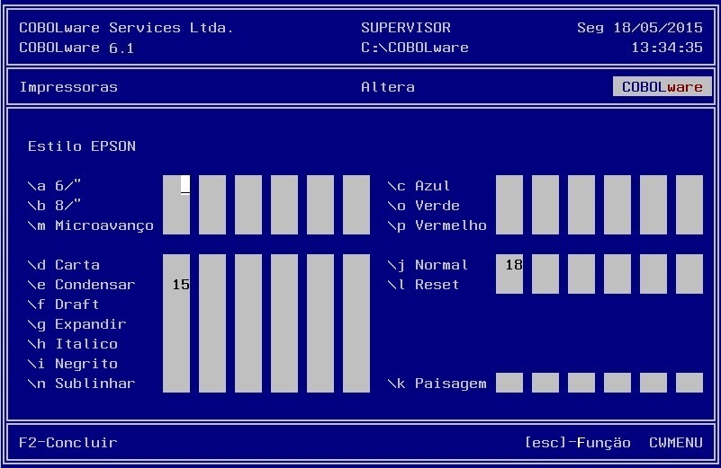

Manutenção da tabela de estilos de
impressão.
Define caracteres de controles abstratos de
modelo de impressora.
|
Modo gráfico |
|
 |
|
Modo texto |
|
 |
Estilo
Identificação do estilo para ser associado ao modelo.
\x
Estilo abstrato e sequencia de escape correspondente no
firmware da impressora real.
Supondo então que seja
necessário imprimir o nome COBOL
de forma condensada e prosseguir a impressão na mesma linha e
no modo normal, a string "\aCOBOL\j"
, caso a impressora selecionada esteja vinculada ao estilo EPSON,
seria convertida para asc(15)++
"COBOL"++
asc(18)
no momento do envio para a impressora.
É permitido definir até 6 códigos para cada caractere de controle genérico, permitindo atender exigências compostas e complexas para os mais variados e sofisticados modelos de impressoras.
Um estilo pode ser vinculado a mais de um modelo de impressora o que facilita bastante a configuração de impressoras.